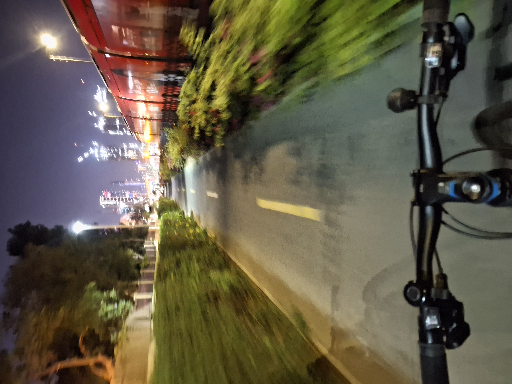
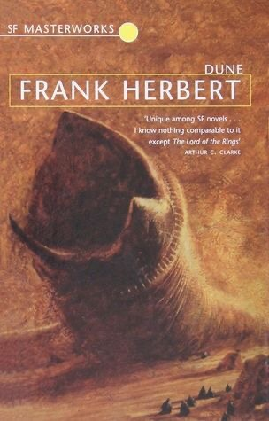
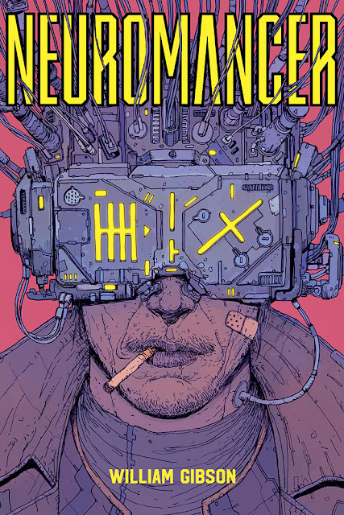
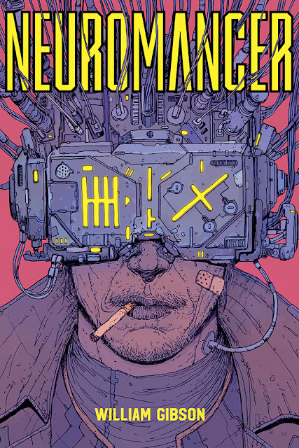
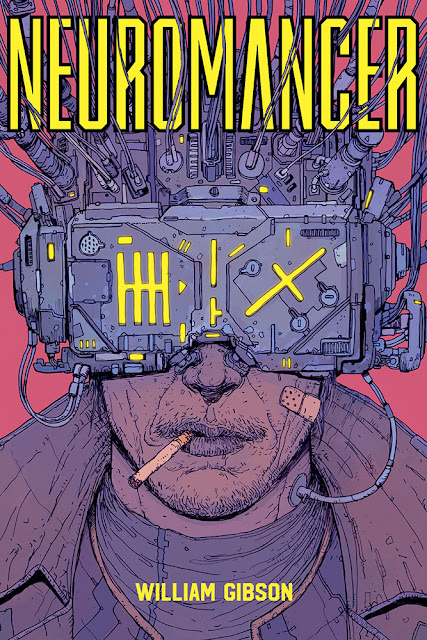

I'm yk, and here's a little bit about me

I was born in chandigarh, moved to dubai at the age of 3, and lived there all my life until I came to college here in hyderabad.
I studied in ihs for 12 of the 14 years I've spent in school
and now I'm in iiith, surrounded by the coolest people I've ever met, trying to make the most of this
an assortment of things I love: reading, unix, vim, cycling, minecraft, niri (the coolest wm I've seen)
some media that defines me

 

